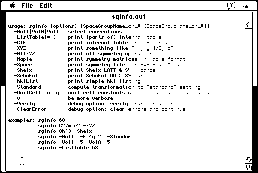

Download
sginfo_1_01.zip (61K) SgInfo 1.0.1 repackaged into a zipped hfs disk image and checksum file. The disk image can be mounted with Mini vMac.
sginfo_1_01.sea.hqx (106K) SgInfo 1.0.1 in the original format.
copyright: Ralf W. Grosse-Kunstleve
mod date: May 2, 1996
license: open source
official url :
SgInfo - Space group Info
A demonstration program for a library of routines “for the Handling of Space Group Symmetry”. Related to Crystallography, I think. A command line program compiled for the Macintosh. Requires System 7.

Download Source
sginfo_1_01open.zip (61K) SgInfo 1.0.1 source repackaged into a zipped hfs disk image and checksum file. The disk image can be mounted with Mini vMac.
sginfo_1_01open.tar.gz (57K) SgInfo 1.0.1 source in the original format.
If you find these downloads useful, please consider helping the Gryphel Project, which hosts them.
Here are the md5 checksums for the downloads, signed with Gryphel Key 5:
--------- GRY SIGNED TEXT --------- 0c3110374eba97ef324db4b9943989ab sginfo_1_01.zip 9136e3ab4c3039c762cebb29cb61314d sginfo_1_01.sea.hqx 0800d46df02c1582161e35a4ca60e8d3 sginfo_1_01open.zip 4bc803ae1efb76df816c390caccc70a9 sginfo_1_01open.tar.gz ------- BEGIN GRY SIGNATURE ------- Gry/4Xa8CFcUzxdN/GZ6LpGJxFjsLe59tGgjduO4pdWGVRS6HGmvjFPHZanecE2o /7iSEXfQNs4qqRBzs0bS7BFrjv6gtnVXVCudnkNGksNRNVcCrXEYpgBOB7iEpH85 CHpYJIwp08Y+p+tG5V5tHcIIKnE7XhB6QC7/siknYHpmCkzFXrHUKLrkeelrcvEB -------- END GRY SIGNATURE --------